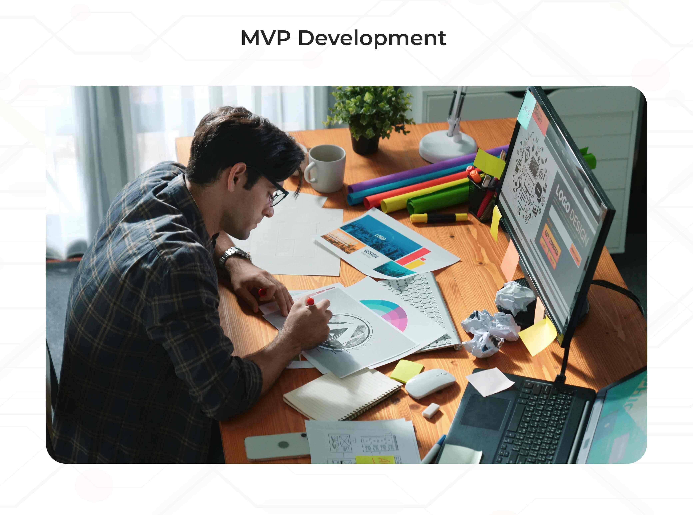

If you’re a tech founder and you have reached this blog then chances are that you’re starting a new project or planning to do custom software development for it. Tech jargon can always be confusing and it can be hard to understand the role of MVP in software development.
That’s alright because I have prepared for you a detailed article outlining just that. We will cover what an MVP is, the purpose of building a Minimum Viable Product, the benefits that you will get and find answers to whether you should consider building an MVP for your project.

I know that you’re eager to start your project so we’ll get right into the interesting bits without wasting any time.
What is mvp in software development and why does it matter for your project?
When you’re building any software solution you will need to see if your product has product market fit. The role of MVP in software development is majorly connected to this concept.
MVP which is an acronym for Minimum Viable Product is the minimalistic version of your software without any fancy bells and whistles. In other words, an MVP will include the core functionalities of your app and will not contain additional features that may be important but does not contribute to your Unique Selling Point or USP. As a new product founder you will have a lot of expenses to meet and marketing new products before you validate the market fit can be a very costly ordeal. This is why we have MVP in software development.
If you have a minimum viable product that is ready for use by your users but does not require huge overhead your journey becomes that much more simple. So, you might be wondering whether MVPs and Proofs of Concept are the same thing. Not exactly.
A proof of concept is just like an experiment you do to see if your product works at its core and may be to show early investors whom you already know. PoCs may not even have a user interface. However, an MVP in software development is not just a piece of code that you can run. It will also be functionally sound so that your users can easily use your software without any hassle. An MVP is aimed at being functional and usable but will not be as elaborate as your broader plans for the product. It's a great choice if you’re planning to enter a competitive space like fintech software development for example.
Discover How to Build a Minimum Viable Product Efficiently For Your Startup Idea
Building a minimum viable product is all about figuring out what’s the major feature that you want your users to experience. MVP in software development is not about making your app as flashy and feature packed as possible. It's about simplifying the product so that your users can experience the core functionalities of your app and give you valuable feedback.
If you’re here then you probably already have an idea. That’s the first piece of the puzzle and you’ve already accomplished that. The next phase is understanding how you want the user experience to be and what technologies you are going to use for your digital product. When it comes to building an MVP in software development the first step after you’ve got your ideas is the wireframing and UI/UX design.
Wireframing
Creating basic wireframes for your product ensures that you have a fixed plan for development and that you don’t move towards any tangents during the process. Once you have your wireframes you will already be able to see your product take shape. This process involves deciding on what features your product will have, how you want the user journey to be and what action or actions you want the users to take while using your digital product. When it comes to MVP in software development is all about simplicity.
UI Design & Prototyping
Once your wireframes are done it's now time for the UI/UX design and more specifically the prototyping. A prototype might sound like the actual piece of software but in UX design terms it means that you’re designing a visual interface for your software that you can simulate like the actual software. Simply put, it will have the screens and pages of your software and you can navigate to different parts of your software.
However, these will just be visual designs and not functional software elements. Prototyping for MVP in software development is all about giving your Alpha users something to test visually so that you can map your user journey and optimize the user experience. After this we move to the next phase which is the custom software development or product development.
Product Development
This stage is where the engineers will go to work and start building the technology for your MVP. Choosing the right technology for your product is crucial because you’re not building the full scale software just yet. The technology that you choose should not be too complex or carry huge overhead costs for you to run. However, you should be able to transition to your full scale product hassle-free. The product phase for MVP in software development is all about choosing the most efficient technology that can help you in the long run.
Now that you understand what the development process looks like, let's see what the purpose of an MVP is.
Understand The Purpose of MVP in Software Development Before Starting Your Next Project
The purpose of you building an MVP is for you to find the product market fit for your idea and product. As a founder you will probably think more about your idea itself rather than whether your ideas are viable for the market. In other words, you have to see if your customers are willing to use and more importantly willing to pay for your service. MVP in software development is about putting your digital products out there for people to use and give you feedback.
The feedback you receive will be invaluable because you can see how your product works in the real world. You will also see if customers have any difficulties while using your product and you will be able to work out all the kinks before you introduce your most flashy and complex features. In many cases, product teams also change the core functionalities according to the user feedback so that the product is saleable once they launch the full version.
MVP in software development is a tool that you can use to make your product great before you spend significant amounts of money building the full scale product. For example, let's just say that you’re building an HRMS software. This software has to be used by businesses in your target market and unless you’ve been building such products for a long time you need the feedback from your users. This feedback will allow you to optimize your software solution so that businesses can easily integrate it with their everyday work process.
Discover The Invaluable Benefits of MVP in Software Development
As you may have already figured out, the benefit of MVP in software development is market validation. When you’re building a new product it's difficult to have all the facts with you about whether your customers will like and use your product.
The feedback you will be able to get from your MVP launch will be invaluable for your project’s future journey.
However, let's just list down a few benefits of an MVP so that we know all the facts.
Market Validation
This is something that we’ve already covered multiple times in this blog but I’m repeating it so that we can keep these ideas organized. We build MVP in software development because it's a quick and effective way to understand how the market feels about your product.
Feedback
Again, we spoke about this but let's revisit it. When you build and launch a minimum viable product for your product you can collect valuable feedback from your users. Many businesses spend hundreds of thousands, even millions of dollars on market research. But who can tell you how to make your software better than your customers? This is why getting feedback is a major factor when it comes to custom software development.
Rapid Launch
Quickly launching your product with its core features and iterating along the way is the right choice for product businesses. MVP in software development is an approach that you can take because you only have to include the major functionalities of your software and you can easily launch your products.
Final thoughts
Since you are taking a simpler and minimalistic approach to custom software development you have the opportunity to work on a fixed budget. You don’t even have to worry about hiring and assembling a team for your project. Because you can easily hire a custom software development agency and delegate the development aspects to them. This is extremely cost effective and oftentimes agencies specialize in MVP development as a service.
A Few Closing Words About MVP in Software Development
Now that you’ve understood the ins and outs about how to approach building your product and the role of MVP in software development it's time for you to turn your ideas into reality. When you build and launch an MVP you can easily validate your product and idea in the market if you are a new product startup. Even if you’re an enterprise building a minimum viable product is a great way to see if you have a solid business model before you start spending huge amounts on full scale development.
If you found this blog helpful then consider sending this to a founder you know who might be on their product development journey.
Frequently Asked Questions
MVP in software development is a minimalistic version of your app with all the core functionalities available for users but will not include complex features that are not essential for the working of the software.
An MVP or Minimum Viable Product is an actual price of software that your users can use and interact with. A Prototype is a visual design that you can use to see how your product looks and navigates but will not have any functionality.
There are many cases where MVP in software development has helped businesses make their products better. For example, if you want to launch a fintech software, financial transactions may be your core feature but you also want to include groups and chats into the software. For your MVP you will not include the groups or chats but only the financial transactions so that you can see if people are happy using it.
This is a question that many founders may have when building their digital product. The cost for building an MVP in software development can range anywhere from $10,000 to a few tens of thousands of dollars depending on the scale and complexity of your product. If you have a highly complex product then it can be even $100,000. But it's subjective and depends on what you are trying to build and accomplish and also the technology you’re using.
When it comes to smaller MVPs most agencies and product teams work on a Waterfall model. But more and more teams are now using Agile Methodologies for building their MVPs because the process is highly flexible. You can easily build a version for your MVP and give it to your Alpha testers. Once you get the initial feedback then you can launch for a public or limited Beta test. The entire process will be flexible and you can make iterations to your product during the development process.
CO-Founder
Yokesh Sankar, Co-Founder and Chief Operating Officer of Sparkout Tech Solutions, leverages his expertise to drive innovation and operational excellence in the software industry. Passionate about empowering individuals with essential skills, he uses technology to streamline business processes and enhance efficiency. He advocates for AI and blockchain adoption, helping businesses integrate these technologies seamlessly into their operations. Staying ahead of AI trends, Yokesh explores industry applications and shares insights to foster growth and knowledge in the tech sector.